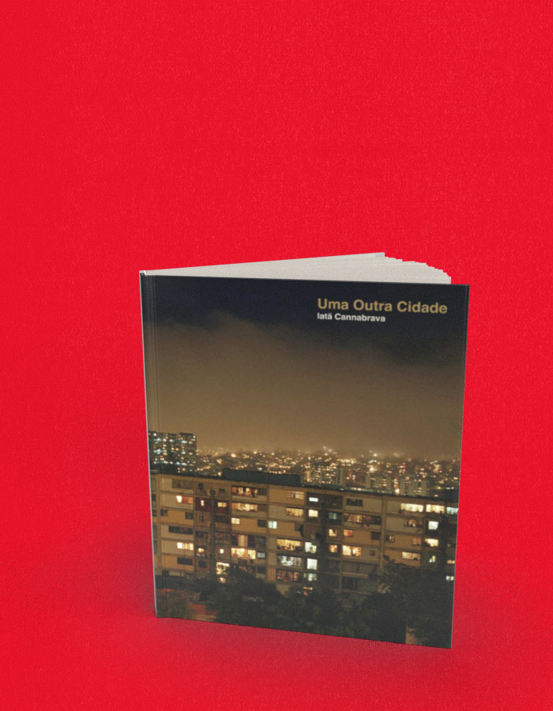

Uma outra cidade
A compra acontece no site da livraria, em uma nova aba. Consulte lá os preços e a disponibilidade. Procure pelo título ou ISBN deste livro.
- Autoria / créditos
- Iatã Cannabrava
- ISBN
- 9788578160418
- Páginas
- 164
- Formato
- 20 x 25 cm
- Acabamento
- capa dura
Sobre o livro
Prêmio Melhor Livro de Fotografia do Ano (2o lugar) da revista Clix / Fotosite 2009
Este projeto documental de Iatã Cannabrava começou no Capão Redondo, em São Paulo, e seguiu por favelas, morros, quebradas, vilas e cerros de outras grandes cidades latino-americanas, como Lima, Caracas, La Paz, México, Buenos Aires, Montevidéu, Brasília e Belém. O resultado está em dezenas de fotos coloridas, de detalhes e planos gerais, de pessoas, casas e carros. Em sua apresentação, Iatã conta sobre o início do projeto, as primeiras idas à periferia, os workshops que deu em Capão Redondo, as favelas estrangeiras, os avanços e retrocessos da condição de vida nesses locais.
Fotógrafo, curador e agitador cultural, Iatã Cannabrava participou de dezenas de exposições, no Brasil e no exterior, e recebeu diversos prêmios por seus trabalhos. Ele criou e dirige o Estúdio Madalena, por meio do qual publica fotolivros (muitos deles em co-edição com a Terceiro Nome), realiza exposições e workshops, além de projetos especiais. É responsável pela coordenação da programação do Paraty em Foco (Festival Internacional de Fotografia de Paraty) e coordena o Fórum Latino-Americano de Fotografia de São Paulo.
← Voltar ao catálogo